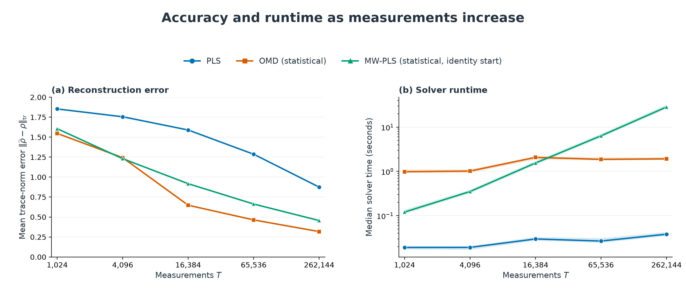
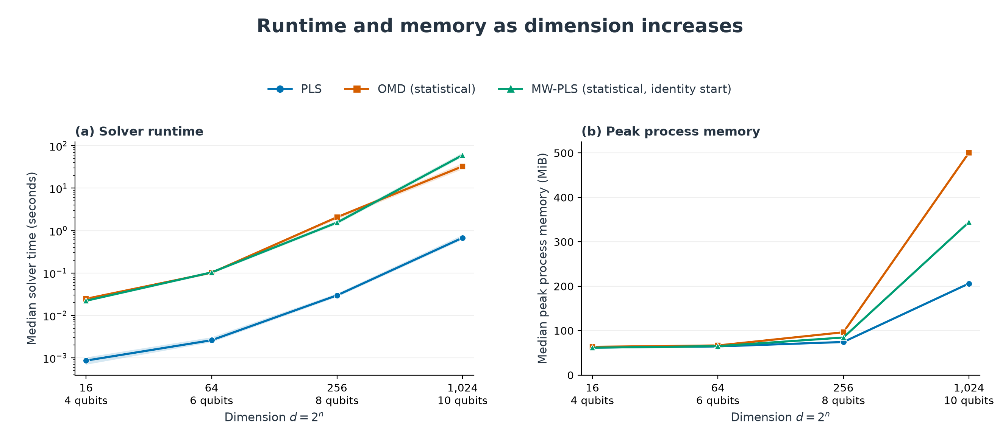

All labeled theoretical results, including minimax upper and lower bounds for quantum state tomography, are formalized in Lean, with code on GitHub and Zenodo.
Abstract
Quantum state tomography provides a foundation for characterizing state preparation and predicting measurement outcomes. We characterize the minimax expected trace norm risk of quantum state tomography over classes with polynomial spectral decay under randomized nonadaptive single copy measurements. Under an explicit sufficient block size condition for the two layer periodic Clifford ensemble, we establish statewise expected trace norm oracle inequalities for operator norm minimum distance and measurement weighted projected least squares, with bounds that depend on each state's actual spectral tail, while the estimators require no prior knowledge of the state's structural characteristics, including its rank, eigenbasis, or spectral structure. Over these polynomial spectral decay classes, both estimators attain the minimax expected trace norm rates up to constants. As a direct consequence, the same estimators attain the minimax rate over every fixed rank constrained class, while remaining adaptive to the unknown structural characteristics of the state. For admissible logarithmic block sizes, the periodic Clifford measurements attain these guarantees with logarithmic elementary gate depth. The main technical ingredient is a uniform bound on the fourth moment of projectors for the periodic Clifford ensemble. The bound is sharp in dimension and holds for arbitrary test states, including those entangled across blocks. Covariance concentration and positivity yield adaptive oracle bounds, while a shared rotation information argument on spectral tail packings establishes matching lower bounds. We also provide polynomial time reconstruction algorithms, numerical comparisons, and Lean formalizations of all labeled theoretical results.
Problem
The goal is the minimax expected trace-norm risk of quantum state tomography over states with polynomial spectral decay, using randomized nonadaptive single-copy measurements. Estimators should adapt to an unknown rank, eigenbasis and spectral structure while using shallow circuits.
Approach
The measurements are two-layer periodic Clifford circuits on blocks of k qubits. The main technical tool is a uniform fourth-moment bound on projectors that is sharp in dimension and holds for any test state. From it the author derives statewise oracle inequalities for operator-norm minimum distance and measurement-weighted projected least squares, and proves matching lower bounds using Grassmann packings. All labeled results are verified in Lean using only standard axioms; the author acknowledges that AI tools generated the formalization.
Results
Both estimators attain the minimax rates up to constants over polynomial spectral decay classes and every fixed-rank class. With logarithmic block sizes they need only logarithmic gate depth. Polynomial-time algorithms and numerical comparisons are also given.

Fig. 2: Measurement count at d=256 , k=2 : mean trace norm error and median solver time for the three selected procedures. Error bands are pointwise 95% bootstrap intervals; runtime bands are interquartile ranges. The horizontal axes and runtime vertical axis are logarithmic; the error axis is linear. Timings include initialization and stopping checks, but exclude data generation and aggregation,

Fig. 3: Dimension at k=2 , T/d=64 : median runtime and peak process memory, with interquartile ranges across datasets and fresh processes, respectively. The horizontal axes and runtime vertical axis are logarithmic; memory is linear. PLS uses one spectral projection; OMD and weighted PLS perform repeated spectral calculations. Solver timings exclude data generation and aggregation, loading, channe